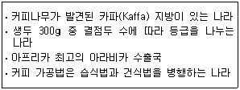
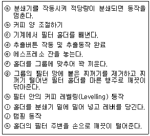

바리스타-2급 (2008-06-14 기출문제)
1과목: 커피학 개론
1. 유럽 국가 중 가장 먼저 커피나무를 경작하기 시작하였으며, 인도네시아에서 커피를 재배하여 대규모 커피경작의 역사를 연 나라는?
- 네덜란드
- 포르투갈
- 이탈리아
- 영국
(정답률: 71%)

2. 커피에 관한 식물학적 내용이다. 다음 중 바르게 설명된 것은?
- 커피나무는 꼭두서니과(Rubiaceae)에 속하는 상록수로, 남아메리카 브라질이 원산지다.
- 아라비카 종은 평균 3%, 로부스타 종은 약 1%의 카페인을 함유하고 있다.
- 아라비카 종의 경우 연평균 강우량 1,500~2,000mm의 규칙적인 비와 충분한 햇볕을 받아야 한다.
- 커피나무에 꽃이 피었다가지고 체리가 맺히기 시작하며, 이로부터 6~8주 지나고 수확이 가능하다.
(정답률: 72%)
3. 로부스타 종 카피에 대한 설명 중 틀린 것은?
- 곰팡이 병에 대한 저항성이 강하기 때문에 인도네시아, 베트남 등 동남아 지역에서 주로 재배되고 있다.
- 생두의 입자가 매우 크고, 품질이 떨어지기 때문에 세계 커피 생산량 비중은 10% 이하이다.
- 아라비카 종에 비하여 풍미는 떨어지지만 재배가 쉽고, 수확량도 많다.
- 배전 콩의 추출수율이 높기 때문에 인스턴트커피용으로 주로 사용된다.
(정답률: 63%)
4. 커피의 단계별 명칭으로 옳지 않은 것은?
- 커피열매 - Cherry
- 커피열매의 정제된 씨앗 - Green Bean
- 원두를 분쇄한 것 - Ground coffee
- 커피 씨앗을 건조시킨 것 - Whole Bean
(정답률: 64%)
5. 다음 커피 품종에 대한 설명이 잘못 연결된 것은?
- 카투라(Catura) - 인도의 고유 품종
- 버번(Bourbon) - 티피카(Typica)의 돌연변이 품종
- 티피카(Typica) - 아라비카 원종에 가장 가까운 품종
- 카티모르(Catimor) - 카투라(Catura)와 HDT (Hibrido de timor)의 교배 품종
(정답률: 66%)
6. 이상적인 아라비카 커피나무의 생육조건과 거리가 먼 것은?
- 해발 800m 이상의 고지대 토양
- 적당한 일교차
- 하루 12시간 이상의 강한 햇빛
- 연간 평균기온 약 20℃, 연간 평균 강우량 1,500 ~ 2,000mm
(정답률: 68%)
7. 커피 종자를 개량하는 목적이 아닌 것은?
- 단위 면적당 생산량 증가의 목적
- 병충해에 강한 품종 개발 목적
- 가뭄과 서리에 강한 품종 개발 목적
- 경작의 용이성을 위한 키가 큰 품종 개발 목적
(정답률: 71%)
8. 커피 생두의 스크린 사이즈(Screen size) 단위에 대하여 올바른 것은?
- 1/44 inch
- 1/54inch
- 1/64inch
- 1/74inch
(정답률: 80%)
9. 커피 체리를 수확하는 방법 중 스트리핑(Stripping)에 대한 설명이 틀린 것은?
- 습식가공 방식으로 커피를 생산하는 지역에서 주로 사용하는 수확 방법이다.
- 나뭇잎, 나뭇가지 등의 이물질이 섞일 가능성이 크다.
- 핸드 피킹(Hand-picking)방식보다 수확 시간을 단축할 수 있다.
- 핸드 피킹(Hand-picking)방식에 배해 인건비 부담이 적다.
(정답률: 60%)
10. 생두의 밀도에 관한 설명 중 올바르게 설명한 것은?
- 생두의 밀도가 높을수록 커피 로스팅은 쉬워진다.
- 밀도가 높을수록 커피의 맛과 향이 풍부하다.
- 고지대에서 재배된 커피나무의 생두는 저밀도이다.
- 생두 크기가 클수록 밀도가 높다.
(정답률: 75%)
11. 커피열매의 가공 방법 중 습식법의 공정 순서로 바른 것은?
- 수확→분리→과육제거→파치먼트 선별→세척→발효→건조→창고
- 수확→분리→과육제거→발효→세척→건조→파치먼트 선별→창고
- 수확→분리→과육제거→발효→파치먼트 선별→세척→건조→창고
- 수확→분리→과육제거→파치먼트 선별→발효→건조→세척→창고
(정답률: 55%)
12. 생두 등급 분류의 “pecialty coffee라 함은(SCAA기준) 생두 ( )g 중 결점수( )이하인 커피를 말한다.”에서 각각의 ( )에 맞는 내용은?
- 300, 5
- 300, 8
- 350, 5
- 350, 8
(정답률: 60%)
13. 과테말라에서 생산되는 생두 중 분류 등급에 따라서 붙게 되는 SHB(Strictly Hard Been) 또는 HB(Hard Been) 등은 무엇을 의미하나?
- 생두의 경작 고도
- 생두의 결점두 비육
- 생두의 재배 방법
- 생두의 성숙 정도
(정답률: 53%)
14. 커피콩 구입 시 포장에 명시된 표기인(Brazil Santos No.2․screen19․ strictly soft)에서 ‘No.2'의 의미는?
- 결점두의 혼입량에 의한 분류
- 커피콩의 크기에 의한 분류
- 투명도의 정도에 의한 분류
- 커피콩의 형태에 의한 분류
(정답률: 53%)
15. 생두를 장기 저장하였을 경우 콩의 색, 풍미 및 산가(酸價)가 변화된다. 이들현상에 대한 설명 중 틀린 것은?
- 장기 저장 시 생두의 산가(酸價)는 높아진다.
- 장기 저장 시 생두의 색은 녹청색에서 갈색으로 변화한다.
- 생두 산가(酸價)의 변화는 단백질의 가수분해 때문이다.
- 생두의 색, 풍미 및 산가(酸價)의 변화는 저장조건과 밀접한 관련이 있다.
(정답률: 49%)
16. 커피 생두(Green Been)의 품질을 평가하는 일반적 기준이다. 틀린 것은?
- 청결도(은피 제거여부)는 가장 중요한 평가요소이다.
- 결점수가 적은 커피가 좋은 커피로 평가된다.
- 생두는 일반적으로 크기가 클수록 좋은 등급으로 취급된다.
- 대체로 고지대에서 생산된 생두가 저지대에서 생산된 생두보다 우수한다.
(정답률: 59%)
17. 모카(Mocha)의 의미로 적당하지 않은 것을 고르시오.
- 예멘의 커피 수출항구 이름
- 인도네시아 자바에서 생산된 커피
- 초콜릿 혹은 초콜릿이 들어간 커피 음료에 붙이는 이름
- 예멘과 에티오피아에서 생산되는 커피의 총칭
(정답률: 54%)
18. 다음 설명에 해당되는 커피 산지는?

- 예멘
- 에티오피아
- 짐바브웨
- 탄자니아
(정답률: 67%)
19. 케냐 커피에 대한 설명 중 맞지 않는 것은?
- 커피 수확량의 대부분이 아라비카 종으로 아프리카를 대표하는 커피 산지이다.
- 체리의 가공방법은 주로 건식법(Dry method)을 이용하고 있다.
- 생두의 등급 표시 방법으로는 AA, A, B 등이 있다.
- 주 생산 커피 종은 아라비카 종인 버번(Bourbon)종과 켄트(Kent)종이다.
(정답률: 33%)
20. 다음 카페인에 관한 설명 중 틀린 것은?
- 아라비카 종에 비해 로부스타 종의 커피가 카페인 함유량이 높다.
- 카페인은 낮은 온도에서 잘 녹으며 커피의 쓴맛을 나타낸다.
- 음용 시 중추신경계 자극을 통한 각성 효과가 있다.
- 음용 시 신장의 혈액 양 증가에 의한 이뇨 효과가 있다.
(정답률: 67%)
21. 디카페인 커피(Decaffeinated coffee)의 제조를 위한 카페인 추출 방법이 아닌것은?
- 증류 추출법
- 몰 추출법
- 초임계 추출법
- 용매 추출법
(정답률: 54%)
22. 스팀을 이용하여 우유거품(Foamed milk)을만들 때 거품을 형성하는 우유의 가장 중요한 성분은?
- 지방
- 단백질
- 비타민
- 칼슘
(정답률: 53%)
23. 우유의 살균법 중 국내 우유업체에서 사유 생산 기준으로 가장 많이 사용하고있는 살균법은?
- 저온 장시간 살균법
- 고온 단시간 살균법
- 초고온 멸균법
- 초고온 순간 살균법
(정답률: 57%)
24. 커피제조 관련 재료의 위생적 관리 및 정리보관을 위하여 어떠한 원칙을 따라야 하나?
- 선입 선출법
- 선입 후출법
- 후입 선출법
- 후입 후출법
(정답률: 68%)
25. 커피하우스에서 Turn over의 의미를 올바르게 설명한 것을 고르시오.
- 테이블의 위치를 교환하는 것을 말한다.
- 테이블마다 고객이 몇 번 이용하는가에 대한 좌석 회전율이다.
- 영업 후 테이블을 정리하는 것을 말한다.
- 영업시간을 연장하는 것을 말한다.
(정답률: 62%)
26. 식품첨가물 중 보존제의 목적이 아닌 것은?
- 수분 감소 방지
- 식품의 영양가 보존
- 변질 및 부패 방지
- 신선도 유지
(정답률: 36%)
27. 다음 중 식품의 부패 현상을 가장 잘 설명한 것은?
- 지방질 식품의 혐기적 분해
- 지방질 식품의 호기적 분해
- 단백질 식품의 혐기적 분해
- 단백질 식품의 호기적 분해
(정답률: 59%)
28. 다음 중 커피 포장에 사용되는 방법에 해당하지 않는 것은?
- 특수밸브(One way valve) 부착 포장
- 질소 치환 포장
- 진공 포장
- 냉동 포장
(정답률: 68%)
29. 커피 추출액에 함유되어 있는 무기질 성분 중 가장 많이 함유되어 있는 성분은?
- 나트륨
- 인
- 칼륨
- 칼슘
(정답률: 64%)
30. 마이야르(Maillard) 반응에 의해 갈색을 나타내는 식품이 아닌 것은?
- 커피
- 홍차
- 흑설탕
- 위스키
(정답률: 47%)
2과목: 로스팅과 향미 평가(커피 배전)
31. 배전도에 대한 설명 중 틀리게 설명한 것은?
- 배전도는 기계적으로 측정한 L(명도) 값으로 나타낸다.
- 배전이 강해질수록 배전도를 나타내는 L(명도) 값은 증가한다.
- 배전도는 배전 과정의 가열온도와 시간에 의하여 결정된다.
- 원두의 갈색 정도를 표준 샘플과 비교해서 배전도를 경험으로 정하기도 한다.
(정답률: 62%)
32. 커피를 배전할 때 일어나는 변화 중 틀린 것은?
- 카페인의 양이 급격히 증가한다.
- 수분의 함량이 급격히 감소한다.
- 휘발성 향기 성분이 증가한다.
- 가용성 성분이 증가한다.
(정답률: 58%)
33. 커피 생콩을 가열할 때 일어나는 화학적, 물리적 변화에 의한 열적 효과에 대한 설명 중 틀린 것은?
- 배전온도 80℃ 부근에서 일어나는 흡열반응은 수분의 증발과 일부 성분의 탈수 반응에 의한 것이다.
- 배전온도 200℃ 부근에서 일어나는 발열반응은 생콩성분의 산화, 분해 및 연소에 의한 것이다.
- 배전콩 침출액의 갈색도는 배전 후반에 급증하므로 생콩의 중량감소와 배전도는 반비례한다.
- 배전 전반부의 생콩 중량 감소는 주로 수분의 증발에 의한 것이고, 후반은 성분의 산화 및 분해에 의한 것이다.
(정답률: 38%)
34. 커피를 배전(Roasting)하는 이유가 아닌 것은?
- 카피 특유의 맛과 향을 얻기 위하여
- 커피추출 가용물질의 증가를 통한 커피추출을 용이하게 하기 위하여
- 오랜 기간 보관하기 위하여
- 커피의 독특한 색을 얻기 위하여
(정답률: 58%)
35. 배전(Roasting)에 대한 설명 중 틀린 것은?
- 열에 의해 생두의 내부에 화학적, 물리적 변화가 생긴다.
- 배전 초기에는 발열반응이 나타나며 배전이 진행됨에 따라 흡열반응이 순차적으로 나타난다.
- 배전 중 생두 표면의 은피(Silver skin)는 열분해가 일어나면서 분리된다.
- 배전 후 공기나 물을 이용해 가능한 빨리 냉각시켜 주어야 한다.
(정답률: 47%)
36. 배전기의 댐퍼 역할과 관계없는 것은?
- 드럼내부의 공기 흐름을 조절하는 역할
- 드럼내부의 열량을 조절하는 역할
- 발열과 흡열반응을 조절하는 역할
- 은피를 배출하는 역할
(정답률: 60%)
37. 커피 원두를 블렌딩(Blending)하는 기본 원칙이다. 가장 관계가 먼 것은?
- 사용하는 커피를 특성별로 분류해야 한다.
- 사용하는 커피의 품질이 한 종류 이상은 뛰어나야 한다.
- 배전단계에 따른 특징별로 분류해야 한다.
- 사용하는 생두의 안정적 확보를 염두에 두어야 한다.
(정답률: 61%)
38. 커피의 향미(Flavor)에 대한 설명으로 올바른 것은?
- 커피의 품질을 결정하는 가장 중요한 요소로 맛과 향기 그리고 바디(Body)에 대한 종합적인 느낌을 말한다.
- 커피를 배전할 때 발생하는 가벼운 휘발성 물질로 발생하는 프래그런스(Fragrance)이다.
- 커피 추출 시 발생하는 향기로 원두를 분쇄하여 뜨거운 물로 추출하면 용해물질 일부가 기화하여 코에 느껴지는 향기이다.
- 향미평가는 관능검사(Sensory evaluation)로 실시되어 표준용어가 없고 각 나라마다 등급이 달라 그 기준이 애매모호하다.
(정답률: 48%)
39. 커피에서 느낄 수 있는 향기는 생두에 있던 향기와 당의 갈변방응(Sugar browning)에 의해서 생성되는 향기, 건류반응(Dry distillation)에 의해서 생성되는 향기로 분류할 수 있다. 다음 향기들 가운데 강배전에 의한 건류반응(Dry distillation) 시에 주로 나타나는 향기가 아닌 것은?
- terpeny(송진 향)
- caramelly(캐러멜 향)
- spicy(향신료 향)
- carbony(탄 향)
(정답률: 55%)
40. 커피 열매가 나무에 달린 채 건조되었을 때, 효소가 작용하여 나타날 수 있는 향미의 결함이라고 볼 수 없는 것은?
- Rubbery(고무 냄새)
- Fermented(발효된 맛)
- Earthy(흑 냄새)
- Musty(곰팡이 냄새)
(정답률: 24%)
41. 다음 중 커피의 향미를 표현하는 용어가 아닌 것을 고르시오.
- Flowery(꽃 향기)
- Fruity(과일 향기)
- Herby(허브 향기)
- Minty(민트 향기)
(정답률: 55%)
42. 커피 생두에 함유된 트리고넬린(Trigonelline)에 대하여 잘못 설명한 것은?
- 커피 배전(Roasting) 후에도 거의 열분해 되지 않고 남아 있다.
- Caffeine의 약 25%의 쓴맛을 나타내는 성분이다.
- 아라비카 종이 로부스타 종 및 리베리카 종에 비하여 많이 함유되어 있다.
- 커피뿐만 아니라 어패류 및 홍조류 등에도 다량 함유되어 있다.
(정답률: 40%)
43. 아래 성분 중에서 생두에 가장 많이 함유되어 있는 것은?
- 비타민
- 탄수화물
- 지질
- 무기질
(정답률: 61%)
44. 원두의 성분 중 배전 전보다 배전 후에 감소되는 성분은?
- 지질
- 카페인
- 클로로겐산
- 탄산가스
(정답률: 51%)
45. 다음은 배전한 커피콩의 갈색 색소의 형성에 대하여 설명한 것이다. 틀린 것은?
- 생두에 함유되어 있는 자당(Sucrose)의 캐러멜화(Caramelization)에 의한 것 이다.
- 아미노산과 환원당간의 마이야르(Mailliard) 반응에 의한 것이다.
- 클로로겐산(Chlorogenic acid)이 자당(Sucrose)의 열분해물과 반응하여 갈색색소를 형성한다.
- 갈색색소는 저분자 물질로 구성되어 있다.
(정답률: 62%)
3과목: 커피 추출
46. 다음은 다양한 추출방식과 대표적인 추출 기구를 연결한 것이다. 올바르지 않은 것을 고르시오.
- 우려내기 - 퍼콜레이터
- 달임법 - 이브릭
- 여과법 - 핸드드립
- 가압 추출법 - 모카포트
(정답률: 50%)
47. 맛있는 커피를 만들기 위한 조건 중 가장 거리가 먼 것은?
- 갓 볶은 신선한 원두
- 커피를 뽑는 사람의 숙련도
- 광물질이 풍부하게 함유된 경수
- 배전도에 알맞은 추출기구
(정답률: 65%)
48. 추출을 위한 분쇄에 관한 설명 중 틀린 것은?
- 선택한 추출방법에 알맞은 분쇄입자를 선택해야 한다.
- 분쇄된 커피에 미분이 많이 함유되어 있을수록 좋은 맛의 커피를 추출할 수 있다.
- 적합한 분쇄는 양질의 원두, 적절한 배전, 올바른 추출법과 함께 좋은 커피를 얻기 위한 중요한 요소이다.
- 분쇄할 때 커피 분쇄기(Grinder)에 희한 마찰열 발생을 최소화 한다.
(정답률: 71%)
49. 다음 은 에스프레소 추출 동작들이다. 올바른 순서대로 정렬한 것은?

- ⓐ-ⓑ-ⓚ-ⓙ-ⓗ-ⓖ-ⓕ-ⓔ-ⓘ-ⓒ-ⓓ
- ⓒ-ⓖ-ⓐ-ⓚ-ⓑ-ⓗ-ⓙ-ⓘ-ⓕ-ⓔ-ⓓ
- ⓒ-ⓖ-ⓐ-ⓘ-ⓗ-ⓑ-ⓙ-ⓚ-ⓕ-ⓔ-ⓓ
- ⓒ-ⓐ-ⓑ-ⓘ-ⓙ-ⓚ-ⓔ-ⓕ-ⓗ-ⓖ-ⓓ
(정답률: 50%)
50. 다음 중 원두의 저장조건에 대한 설명으로 틀린 것은?
- 산패의 주원인은 커피의 향기 성분 간의 상호작용과 산소에 의한 산화 작용이다.
- 커피의 저장 온도가 10℃ 상승할 때마다 향기 성분은 2.3배씩 빨리 감소한다.
- 분쇄한 커피는 공기와 접촉이 크므로 산화가 급격히 진행된다.
- 강하게 배전한 원두는 산화가 더 늦게 진행된다.
(정답률: 65%)
51. 페이퍼 드립퍼에 있는 리브(Rib)의 역할을 바르게 설명한 것은?
- 드립퍼의 내구성을 높이는 역할을 한다.
- 필터와 드립퍼 사이에 간격을 만들어 커피 추출액이 쉽게 흘러 내려가도록 한다.
- 접촉명을 높여 물이 빠지는 시간을 길게 하는 역할을 한다.
- 리브(Rib)가 많을수록 유속이 느려져 보다 진한 커피를 뽑을 수 있다.
(정답률: 61%)
52. 다음은 추출 기구에 관한 설명이다. 바르게 연결된 것은?
- 플런저(Plunger) - 터키식 커피를 추출하는데 이용되는 기구로 미세하게 분쇄된 커피와 물을 함께 넣은 후 달이는 방식을 취한다.
- 케츠베(Cezve) - 비커와 뚜껑 가운데 봉이 달린 금속필터로 구성되어 있으며, 커피를 우려내는 방식을 취한다.
- 모카포트(Moka pot) - 2개의 포트와 그 사이를 연결하는 필터로 구성되어 있다. 아래쪽 포트에서 끓은 물이 필터의 바스켓 부분에 넣은 커피가루를 통과해 위쪽의 포트에 분출되도록 구성되어 있다.
- 사이펀(Syphon) - 찬물로 카피를 우려내는 방식으로 위, 아래 두 개의 유리볼과 그 사이를 조합하는 메탈필터로 이루어져 있다.
(정답률: 60%)
53. 머신을 이용한 에스프레소 추출 시 전혀 추출이 일어나지 않는 이유로 가장 거리가 먼 것은?
- 추출되는 물의 온도가 너무 낮다.
- 머신의 분사필터가 막혀 있다.
- 정수기의 필터가 막혀 있다.
- 펌프 모터가 작동되지 않는다.
(정답률: 57%)
54. 탬핑(Tamping)을 하는 가장 주된 목적은?
- 필터에 커피를 잘 채우기 위하여
- 커피 케이크의 고른 밀도 유지를 통해 물이 균일하게 통과되게 하기 위하여
- 물과의 접촉 면적을 늘리기 위하여
- 두꺼운 크레마를 얻기 위하여
(정답률: 68%)
55. 에스프레소 추출에 40초가 걸렸다. 조정해야 할 사항은?
- 원두의 분쇄입자를 굵게 조절한다.
- 사용되는 커피의 양을 늘린다.
- 보일러 압력을 높인다.
- 탬핑의 강도를 높인다.
(정답률: 52%)
56. 에스프레소 추출 시 과소추출(under extraction)의 원인이 아닌 것은?
- 원두의 분쇄가 매우 곱다.
- 탬핑이 기준보다 약하다.
- 추출압력이 너무 세다.
- 기준양보다 적은 원두를 사용했다.
(정답률: 48%)
57. 다음 중 성격이 다른 하나는?
- 리스트레또(Ristretto)
- 카페 라떼(Caffe latte)
- 룽고(Lungo)
- 도피오(Doppio)
(정답률: 65%)
58. 필터 홀더(filter holder)의 두께를 두껍게 하는 가장 큰 이유는 무엇인가?
- 크레마를 많이 만들기 위해
- 쓴맛을 제거하기 위해
- 온도를 유지하기 위해
- 파손되는 것을 방지하기 위해
(정답률: 62%)
59. 그룹헤드의 개스킷(오링)의 교환 시기 설명 중 잘못된 것은?
- 필터 홀더를 정면에서 90°가 되게 돌릴 때 탄력이 느껴지지 않을 때
- 필터 홀더를 정면에서 돌릴 때 90°를 넘을 때
- 커피의 추출이 연속적이지 않고 끊겨서 나올 때
- 커피 추출 시 옆으로 물이 샐 때
(정답률: 50%)
60. 맛있는 한잔의 커피를 위하여 지켜야 할 사항들이다. 가장 거리가 먼 것은?
- 추출 기구는 항상 청결하게 유지한다.
- 항상 신선한 원두를 사용한다.
- 깨끗하고 알맞은 온도의 물을 사용한다.
- 신속한 추출을 위해 원두는 미리 분쇄하여 사용한다.
(정답률: 80%)